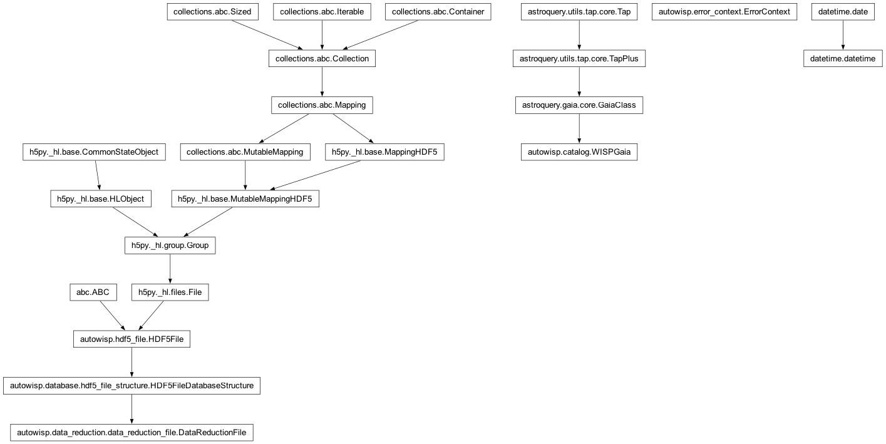

autowisp.multiprocessing_util module
Class Inheritance Diagram

Multiprocessing utilities for the pipeline.
- autowisp.multiprocessing_util._enable_faulthandler(stream)[source]
Point
faulthandleratstreamso a fatal signal self-reports.A segfault / abort / FPE produces no Python exception, so a worker that dies of one is “silent” and – because the pool executor collapses every pending future to the same
BrokenProcessPooland discards which worker died – otherwise unattributable. Withfaulthandlerenabled against the worker’s redirected stderr, the faulting worker dumps a native traceback into its own log before dying; workers the executor merelyterminate()``s (``SIGTERM) dump nothing, so the log carrying a dump singles out the culprit. Also armsSIGUSR1(POSIX) so a hung worker can be prodded to dump where it is stuck.Best-effort: silently does nothing where it cannot attach (e.g. a captured stderr with no real
fileno); never fails bootstrap.- Parameters:
stream – The (already redirected) stderr file object to dump to.
- Returns:
None
- autowisp.multiprocessing_util.get_log_outerr_filenames(existing_pid=False, **config)[source]
Return the filenames where setup_process() redirects log and output.
- autowisp.multiprocessing_util.setup_process(**config)[source]
Like setup_process_map, but accepts keyword arguments.
- autowisp.multiprocessing_util.setup_process_map(config)[source]
Logging and I/O setup for the current processes.
- KWArgs:
- std_out_err_fname(str): Format string for the standard output/error
file name with substitutions including any keyword arguments passed to this function,
nowwhich gets replaced by current date/time,pidwhich gets replaced by the process ID,taskwhich gets the value'calculate'by default but can be overwritten here.- logging_fname(str): Format string for the logging file name (see
std_out_err_fname).- fname_datetime_format(str): The format for the date and time string
to be inserted in the file names.
- logging_message_format(str): The format for the logging messages (see
logging module documentation)
- logging_verbosity(str): The verbosity of logging (see logging module
documentation)
- All other keyword arguments are used to substitute into the format
strings for the filenames.
- Returns:
None